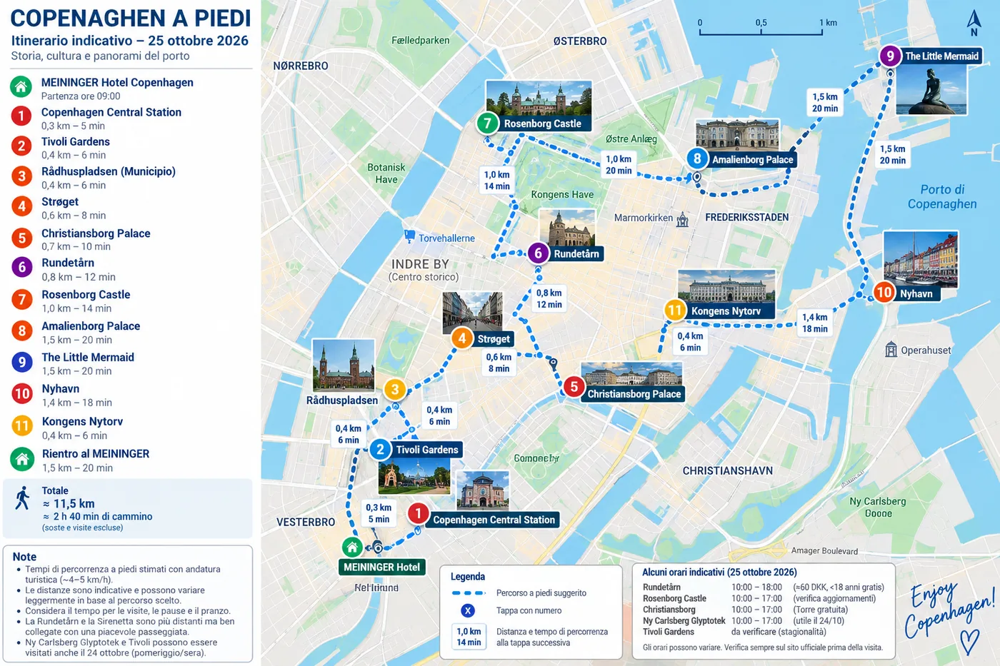

Copenhagen a piedi
Domenica 25 ottobre · ~11–12 km · ~2 h 40 min di cammino effettivo

Mappa indicativa/non cartografica. Usa Google Maps per la navigazione reale e per eventuali deviazioni.
09:00MEININGER → Central Station
09:10Tivoli · passaggio esterno
09:20Rådhuspladsen
09:40Strøget
10:10Christiansborg
11:00Rundetårn
12:00Rosenborg + King's Garden
13:30Amalienborg
14:40The Little Mermaid
15:45Nyhavn
16:30Kongens Nytorv
17:15Rientro al MEININGER